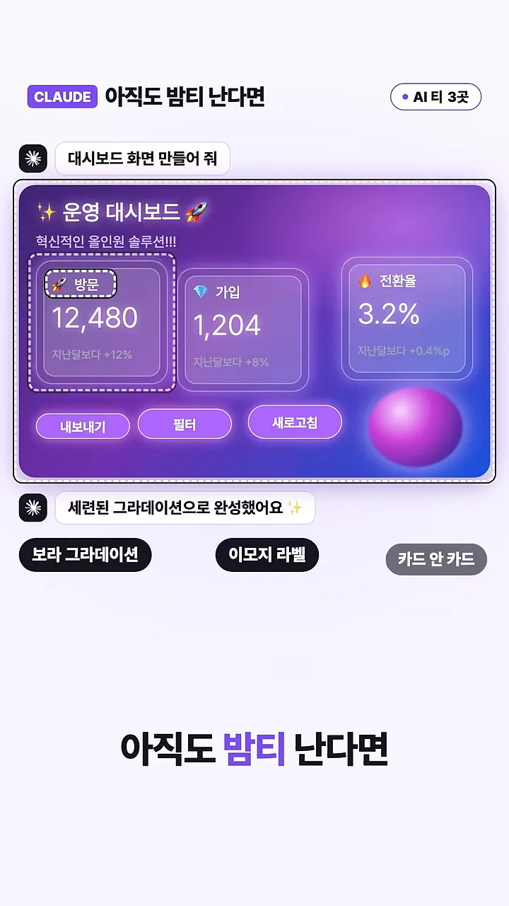
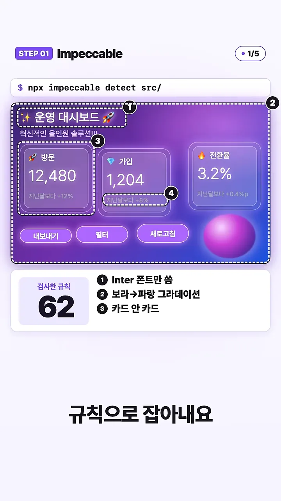
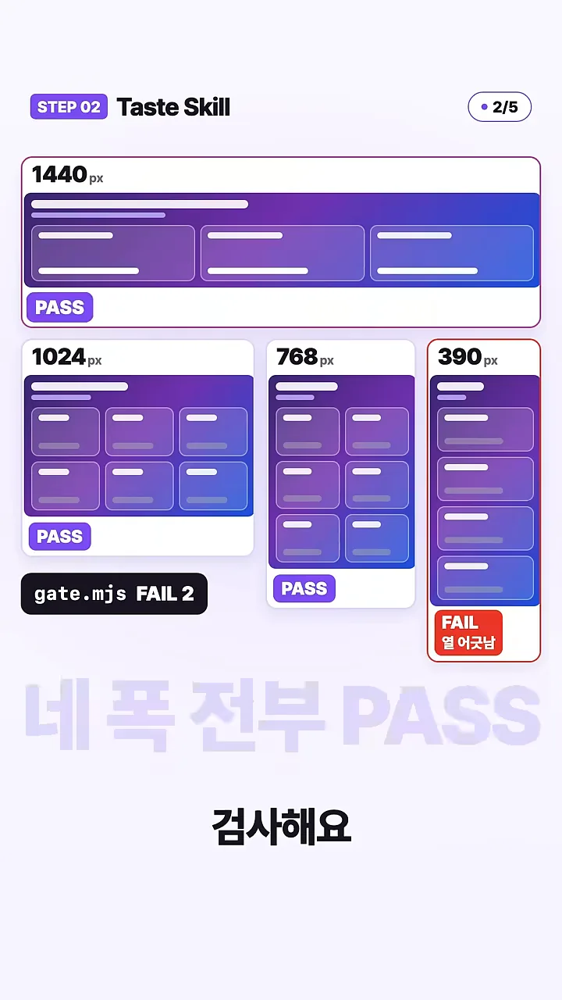
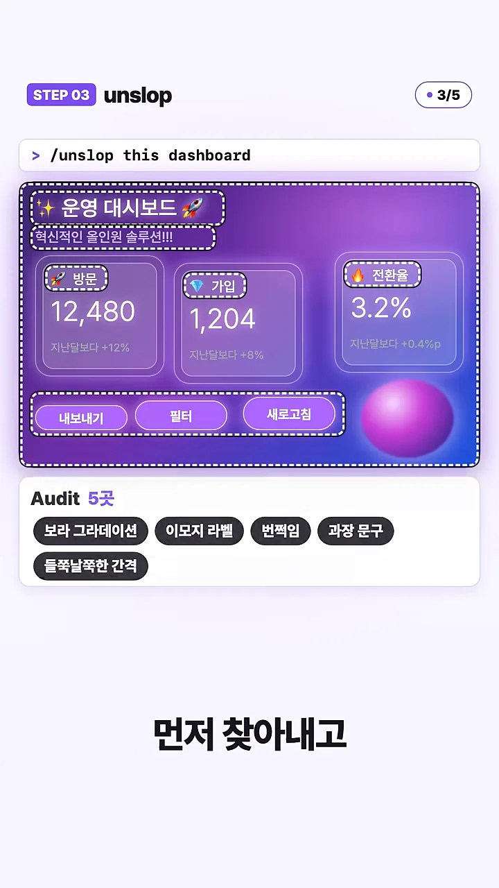
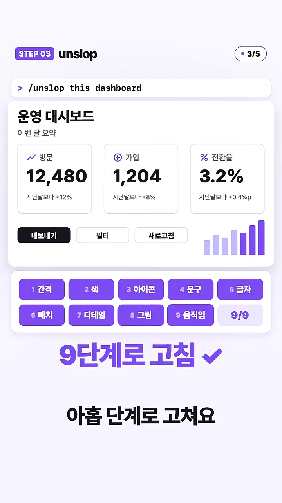
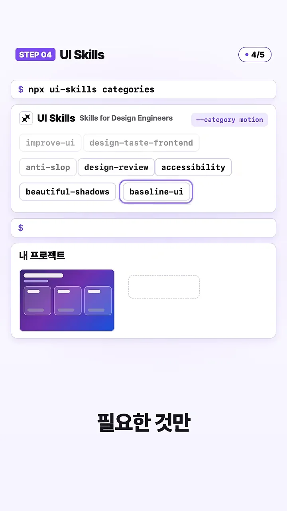
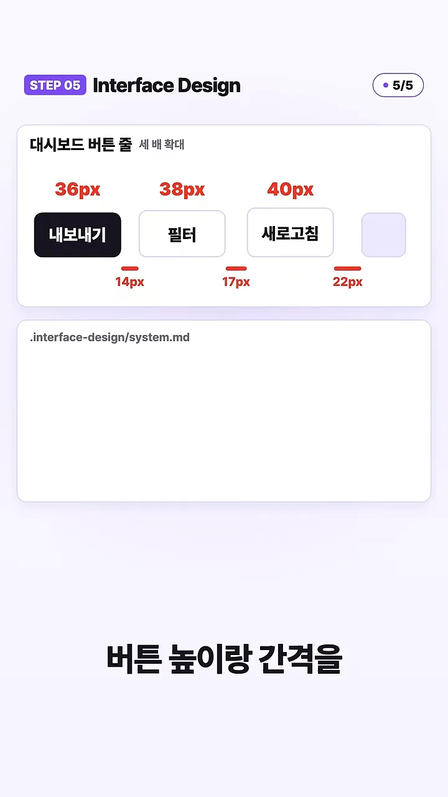
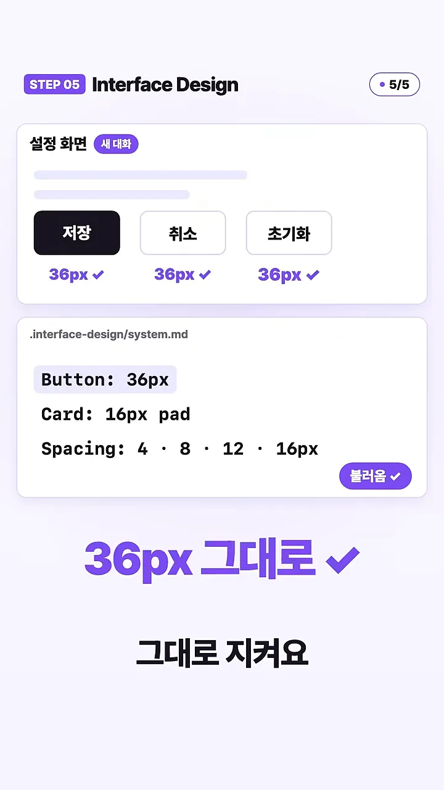
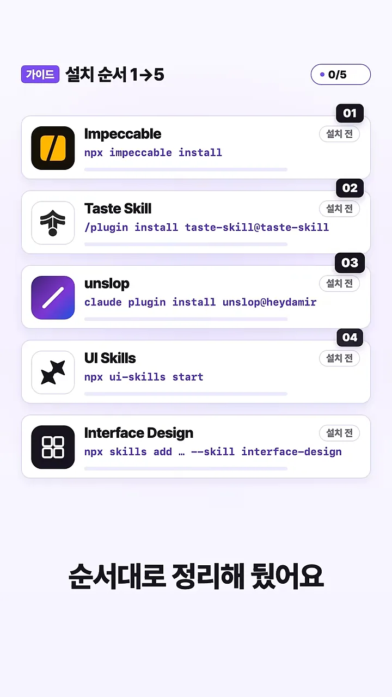

AI 티를 잡아내는 두 검사기
'밤티 난다'는 촌스럽고 어설퍼 보인다는 뜻의 말이에요. 영상은 클로드로 화면을 만들기 전에 디자인 스킬 다섯 개를 먼저 깔라고 해요. 깔기 전에는 화면부터 만들지 말라는 게 첫마디예요.
아래 예시는 "대시보드 화면 만들어 줘" 한 줄에 클로드가 만든 '운영 대시보드'예요. 클로드는 "세련된 그라데이션으로 완성했어요"라고 답해요. 하지만 아래쪽 태그 세 개가 영상이 짚은 AI 티예요. 보라 그라데이션, 이모지 라벨, 카드 안 카드죠. 제목 옆 로켓 이모지와 '혁신적인 올인원 솔루션!!!' 문구도 같은 흔적이에요.

Impeccable — 규칙으로 잡아내기
첫 번째는 Impeccable이에요. 화면 위쪽 명령 npx impeccable detect src/가 코드 폴더를 검사해요. 대시보드에 번호 1~4가 찍힌 곳이 걸린 자리예요. 아래 카드에는 '검사한 규칙 62'와 함께 잡아낸 것 세 가지가 적혀 있어요. Inter 폰트만 씀, 보라에서 파랑으로 가는 그라데이션, 카드 안 카드예요. 설치는 npx impeccable install 한 줄이고, GitHub 별은 11만 개를 넘었다고 해요.

Taste Skill — 실제 브라우저 네 가지 폭에서 확인
두 번째 Taste Skill도 별이 11만 개라고 해요. 이 스킬은 만든 화면을 실제 브라우저에 띄워 봐요. 아래 화면에서 위에서부터 1440px, 1024px, 768px, 390px 네 폭이에요. 앞의 세 폭은 PASS지만 맨 오른쪽 390px은 '열 어긋남'으로 FAIL이에요. 그래서 왼쪽 아래 gate.mjs가 'FAIL 2'를 띄워요. 흐리게 보이는 '네 폭 전부 PASS'가 고친 뒤의 목표예요.

고치고, 필요한 것만 받기
unslop — 먼저 찾고, 아홉 단계로 고치기
세 번째 unslop은 /unslop this dashboard처럼 불러요. 이름 그대로 슬롭을 걷어 내는 스킬이에요. 아래 화면 'Audit 5곳'이 먼저 찾아낸 문제예요. 보라 그라데이션, 이모지 라벨, 번쩍임, 과장 문구, 들쭉날쭉한 간격이죠. 대시보드 위 점선 상자들이 그 자리를 가리켜요.

찾은 다음에는 순서대로 고쳐요. 아래 화면 보라 칸 아홉 개가 그 순서예요. 1 간격, 2 색, 3 아이콘, 4 문구, 5 글자, 6 배치, 7 디테일, 8 그림, 9 움직임이에요. 위쪽 대시보드는 흰 바탕에 '이번 달 요약'과 숫자 세 개, 작은 막대그래프만 남았어요. 구슬 장식과 이모지, 과장 문구가 모두 빠졌어요.

UI Skills — 필요한 스킬만 골라 받기
네 번째 UI Skills는 디자인 엔지니어를 위한 스킬을 모아 둔 곳이에요. 화면에서는 npx ui-skills categories로 목록을 띄웠어요. improve-ui, design-taste-frontend, anti-slop, design-review, accessibility, beautiful-shadows, baseline-ui가 보여요. 그중 테두리가 진한 baseline-ui 하나만 골라 내 프로젝트에 받는 장면이에요.

규칙을 기억시키고 순서대로 설치하기
Interface Design — 한 번 정한 값을 계속 지키기
다섯 번째 Interface Design은 일관성을 맡아요. 아래 화면은 대시보드 버튼 줄을 세 배로 키운 모습이에요. 버튼 높이가 36px, 38px, 40px로 다르고, 버튼 사이 간격도 14px, 17px, 22px로 제각각이에요. 아래 .interface-design/system.md 칸은 아직 비어 있어요.

값을 한 번 정하면 system.md에 적혀요. 화면에는 Button 36px, Card 16px pad, Spacing 4·8·12·16px이 보여요. 새 대화에서 '설정 화면'을 만들어도 이 파일을 불러와요. 그래서 저장·취소·초기화 버튼이 모두 36px로 나와요.

다섯 개 설치 순서
마지막 화면은 다섯 개를 1부터 5까지 설치 순서대로 정리한 목록이에요. 줄마다 스킬 이름과 설치 명령이 하나씩 붙어 있어요.

| 순서 | 스킬 | 맡는 일 | 화면의 설치 명령 |
|---|---|---|---|
| 1 | Impeccable | 규칙 62개로 AI 티 검사 | npx impeccable install |
| 2 | Taste Skill | 실제 브라우저 네 폭에서 확인 | /plugin install taste-skill@taste-skill |
| 3 | unslop | 문제 찾고 아홉 단계로 고치기 | claude plugin install unslop@heydamir |
| 4 | UI Skills | 필요한 스킬만 골라 받기 | npx ui-skills start |
| 5 | Interface Design | 버튼 높이·간격 규칙 기억 | npx skills add … --skill interface-design |